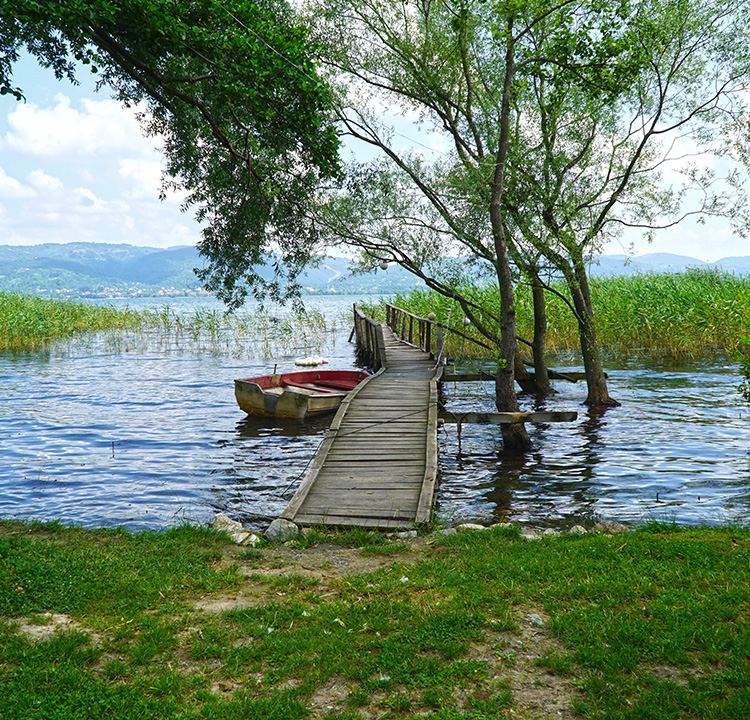
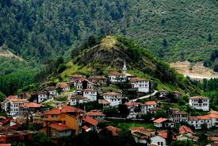
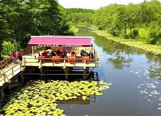
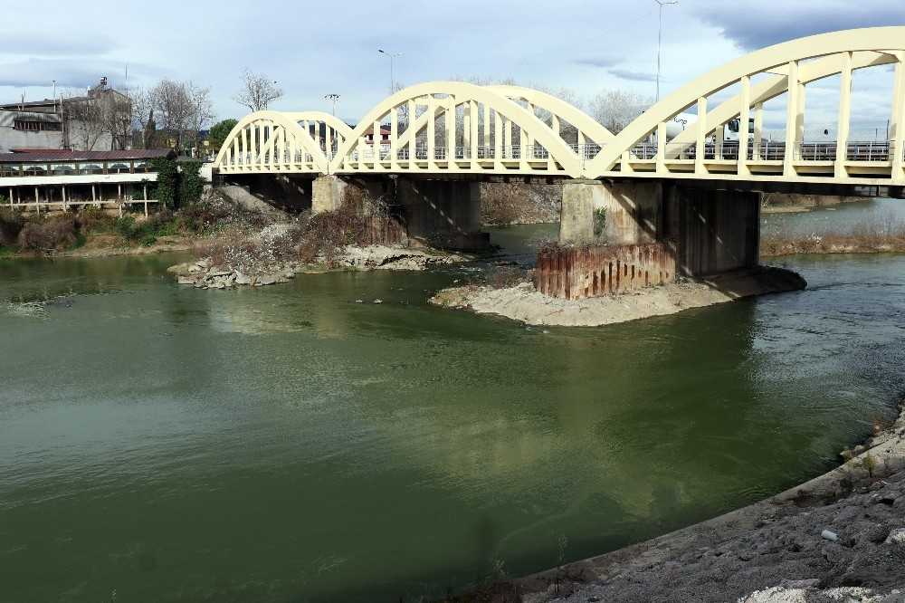

İlginç Yerler





Sakarya, tarih boyunca birçok uygarlığın merkezi olmuştur. Roma, Bizans ve Osmanlı İmparatorluğu'nun etkisi şehirde görülmektedir. Özellikle Osmanlı döneminde önemli bir ticaret ve yerleşim alanı olmuştur. Şehir, Kurtuluş Savaşı sırasında da stratejik bir rol oynamıştır.